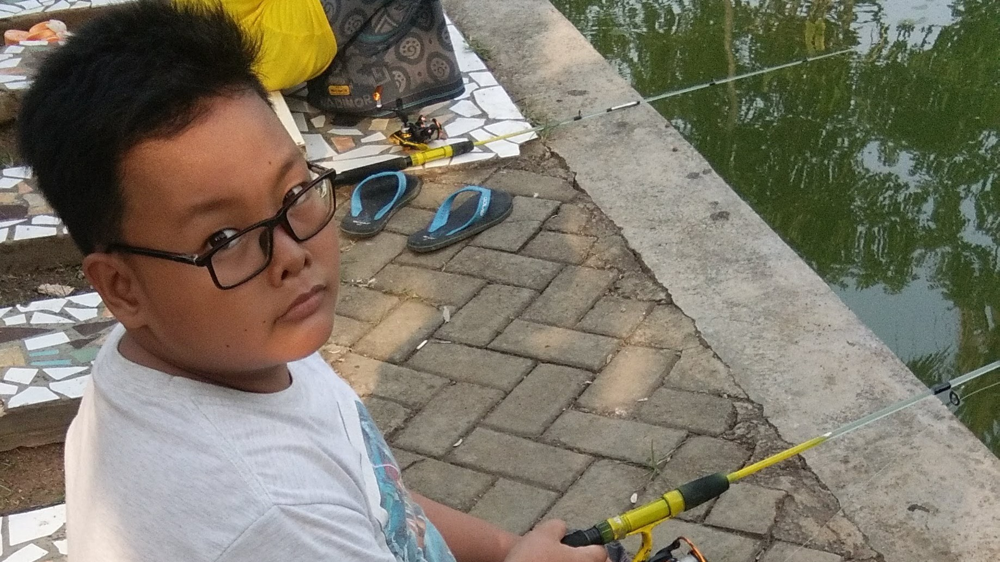

Saya lahir pada 13 Oktober 2007 di Kota Tangerang dan merupakan anak tunggal dalam keluarga saya. Sejak kecil, saya tinggal di sebuah daerah yang sering mengalami banjir. Meskipun begitu, saya sangat menikmati kehidupan di sana karena saya memiliki banyak teman yang selalu bermain bersama saya setiap hari. Masa kecil saya, terutama dari kelas 1 hingga kelas 6 SD, adalah masa-masa yang paling indah dalam hidup saya. Saya memiliki banyak kenangan manis bersama teman-teman saya, dari bermain di lapangan, berlari-lari di gang kecil, hingga pulang sekolah bersama. Mereka adalah teman-teman yang baik, setia, dan selalu menemani saya dalam suka maupun duka.
Namun, kebahagiaan itu sedikit terguncang ketika saya harus pindah ke daerah Kotabumi saat saya naik ke kelas 1 SMP. Awalnya, saya merasa sangat berat meninggalkan lingkungan yang sudah begitu akrab dengan saya. Sayangnya, masa awal SMP saya tidak berjalan seperti yang saya harapkan. Saat itu, dunia sedang menghadapi pandemi COVID-19, yang menyebabkan semua aktivitas, termasuk sekolah, harus dilakukan secara daring. Saya tidak bisa bertemu dengan teman-teman baru secara langsung, sehingga sulit bagi saya untuk membangun hubungan pertemanan yang erat. Hampir seluruh tahun ajaran pertama saya habis hanya dengan belajar dari rumah, tanpa banyak interaksi sosial. Karena kurangnya kesempatan untuk berkenalan dengan teman-teman di sekolah, saya menjadi lebih pendiam dan lebih banyak menghabiskan waktu di rumah. Tidak seperti di masa SD, di mana saya selalu bermain di luar dan bertemu banyak orang, di Kotabumi saya lebih sering menyendiri. Saya merasa kesulitan untuk beradaptasi dengan lingkungan baru, terutama karena pandemi yang membatasi pergerakan sosial.
Seiring waktu berlalu, paman saya memutuskan untuk membeli rumah di Rajeg, karena menurutnya lebih baik tinggal di rumah sendiri daripada di rumah kontrakan. Keputusan itu membawa perubahan besar dalam hidup saya, karena saya harus kembali beradaptasi dengan lingkungan baru. Saya kemudian bersekolah di SMK Yayasan Mutiara Insan Nusantara dan memilih jurusan Teknik Komputer dan Jaringan (TKJ). Sejak kecil, saya memang selalu tertarik dengan hal-hal yang berhubungan dengan teknologi. Saya senang membongkar perangkat elektronik, mencoba memahami cara kerja komputer, serta belajar tentang jaringan dan internet. Oleh karena itu, saya merasa jurusan TKJ sangat cocok dengan minat saya. Di sekolah baru ini, saya mulai menemukan kembali kebahagiaan yang sempat hilang. Saya bertemu dengan teman-teman yang baik, unik, dan menyenangkan. Mereka menerima saya dengan tangan terbuka, dan perlahan-lahan, saya mulai merasa nyaman kembali dalam lingkungan sosial. Saya memiliki hubungan yang baik dengan mereka, dan saya berharap bisa membangun lebih banyak pertemanan di sekolah ini. Saya percaya bahwa memiliki banyak teman adalah hal yang penting, karena dalam kesulitan, mereka selalu siap membantu dan mendukung saya.
Dengan segala perjalanan hidup yang telah saya lalui, saya menyadari bahwa setiap perubahan dalam hidup membawa tantangan dan pelajaran berharga. Saya belajar untuk beradaptasi, bertahan, dan menemukan kebahagiaan di setiap situasi. Kini, saya ingin menjalani masa sekolah saya dengan lebih semangat, menggali lebih dalam minat saya di bidang teknologi, dan tentunya membangun lebih banyak kenangan indah bersama teman-teman saya.

Belajar seperti kamera yang hidup untuk mengabadikan sesuatu yang berharga buat seseorang
Baca lebih lanjut...